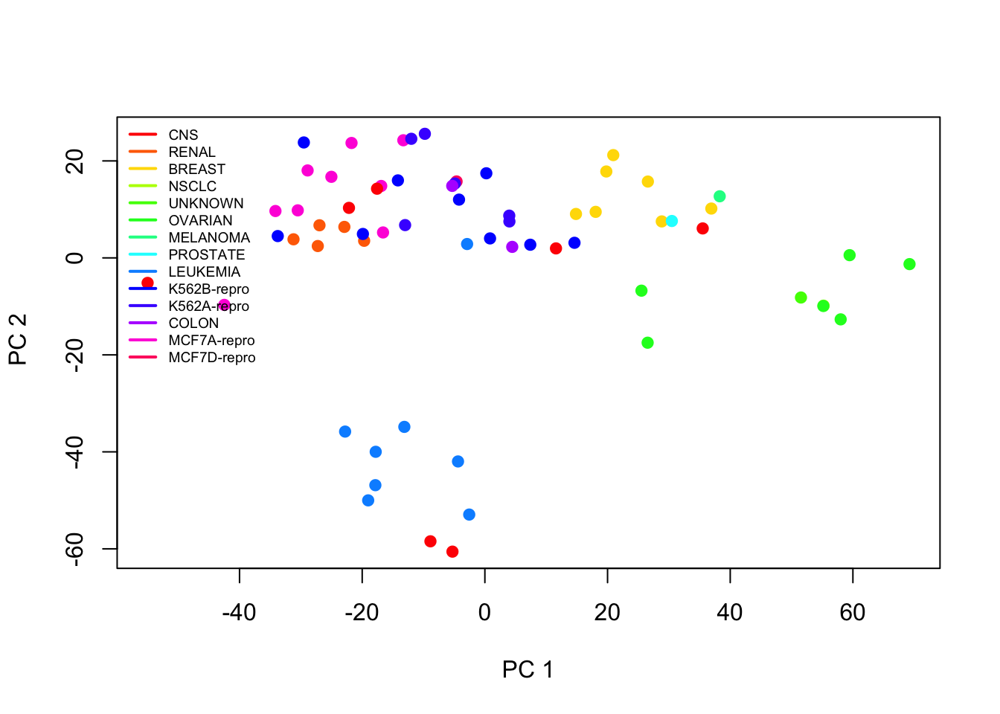

library(ISLR)
# or, load('data/NCI60.RData')
nci.labs <- NCI60$labs # Sample labels (tissue type)
nci.data <- NCI60$data # Gene expression data setR Lab (day 4): Clustering
Download datasets here, or from Canvas.
R script: Code
Presentation: Slides
Exercise 1: NCI60
We look at the NCI60 data again. First load the dataset.
Hierarchical clustering
We start by scaling the data, and calculate the distance matrix (using the Euclidean distance), and then investigate different linkage methods.
# Scale the data to zero mean and unit variance:
sd.data <- scale(nci.data)
# Calculate the distance matrix
# equivalent: data.dist <- dist(sd.data, method="euclidean")
data.dist <- dist(sd.data)Next we perform hierarchical clustering with distance matrix as input. The function we use is hclust(). We specify the linkage method to be complete.
Once the result is saved in hc.complete object, you can plot the dendrogram.
# Perform clustering
hc.complete <- hclust(data.dist, method="complete")
# names(hc.complete)
plot(hc.complete, labels=nci.labs, main="Complete Linkage", xlab="", sub="")
The object hc.complete contains a lot of information. To get the information, you can use the $ operator.
You should refer to the documentation for hclust() to see a complete list of output. Use ?hclust to get the documentation on how to use the function.
hc.complete$dist.method # distance method[1] "euclidean"# hc.complete$merge # order of aggregations of samples / clusters
# hc.complete$height # distance at which aggregations happen
# hc.complete$labels # labels (numeric, since we don't know the original categories!)
# hc.complete$method
# hc.complete$callWe can try different linkage methods and see how the clustering results differ. Change the method argument in the function, and plot the results.
hc.average <- hclust(data.dist, method="average")
hc.single <- hclust(data.dist, method="single")
plot(hc.average, labels=nci.labs, main="Average Linkage", xlab="", sub="")
plot(hc.single, labels=nci.labs, main="Single Linkage", xlab="", sub="")Now we focus on complete linkage only.
First, we use cutree() to compare the results when the data are separated into either 2 or 4 clusters.
# Compare 2 clusters and 4 clusters:
hc.clusters <- cutree(hc.complete, c(2, 4))
head(hc.clusters) # print first 6 results 2 4
V1 1 1
V2 1 1
V3 1 1
V4 1 1
V5 1 2
V6 1 2# cross tabulation
table(hc.clusters[,"2"], hc.clusters[,"4"])
1 2 3 4
1 40 7 0 0
2 0 0 8 9It is more straightforward to check the results with a dendrogram.
# visualize the cuts
# how do you know where to draw the line? check height
heights <- hc.complete$height
tail(heights, 4) # print the last 4[1] 137.5633 141.2472 142.9218 162.2074plot(hc.complete, labels=nci.labs, main="Complete Linkage", xlab="", sub="")
abline(h=140, col="red") # 4 clusters
abline(h=150, col="blue") # 2 clusters
The way to interpret the height variable is simple: it is where two clusters are merged into one. For example, the largest cluster corresponds to the last value of height (162.2) - if you check the figure, it is exactly where the horizontal line is merging the two groups. Similarly, 142.9 is where three groups became two, 141.2 is where four groups became three. If you draw a line at 140, it points out the four clusters.
How are the labels distributed between clusters? We can focus on 4 cluster situation, and use table() to list out which cancer types is merged in which of the four clusters.
For example, breast cancer appears in all but 3rd cluster; melanoma only appears in the first clsuter; so on so forth.
table(hc.clusters[,"4"], nci.labs) nci.labs
BREAST CNS COLON K562A-repro K562B-repro LEUKEMIA MCF7A-repro MCF7D-repro
1 2 3 2 0 0 0 0 0
2 3 2 0 0 0 0 0 0
3 0 0 0 1 1 6 0 0
4 2 0 5 0 0 0 1 1
nci.labs
MELANOMA NSCLC OVARIAN PROSTATE RENAL UNKNOWN
1 8 8 6 2 8 1
2 0 1 0 0 1 0
3 0 0 0 0 0 0
4 0 0 0 0 0 0Finally, we see what happens if we use unscaled data instead of scaled data, or if we use a correlation-based distance metric instead of the Euclidean distance.
Compare the dendrograms: How different are the resulting clusterings? Do you recognise subclusters that are consistent?
# Compare scaled data versus non-scaled data:
hc.unscaled <- hclust(dist(nci.data), method="complete")
plot(hc.unscaled, labels=nci.labs, main="Complete linkage with unscaled features", xlab="", sub="")
# Compare Euclidean distance with correlation-based distance:
dd <- as.dist(1-cor(t(sd.data)))
hc.corr <- hclust(dd, method="complete")
plot(hc.corr, labels=nci.labs, main="Complete linkage with correlation-based distance", xlab="", sub="")
K-means clustering
In this section we explore the K-means clustering on the same dataset.
In contrast to the hierarchical clustering which requires a distance as input, with K-means you would provide the data matrix. The data matrix can be scaled (centered and with unit variance), or unscaled.
In this example we use scaled data computed from before, sd.data.
set.seed(4) # set random seed
km.out4 <- kmeans(sd.data, centers = 4, nstart=20)
km.out4$cluster V1 V2 V3 V4 V5 V6 V7 V8 V9 V10 V11 V12 V13 V14 V15 V16 V17 V18 V19 V20
4 4 4 4 4 4 4 4 4 4 4 4 4 4 4 4 4 4 4 4
V21 V22 V23 V24 V25 V26 V27 V28 V29 V30 V31 V32 V33 V34 V35 V36 V37 V38 V39 V40
4 4 4 1 1 4 1 4 1 4 4 1 1 3 3 3 3 3 3 3
V41 V42 V43 V44 V45 V46 V47 V48 V49 V50 V51 V52 V53 V54 V55 V56 V57 V58 V59 V60
3 1 1 1 1 1 1 1 1 1 1 1 1 1 1 2 2 2 2 2
V61 V62 V63 V64
2 2 2 2 Read the help file ?kmeans to understand what the argument nstart=20 does. Comparing an analysis with nstart=20 versus nstart=1 demonstrates how the cluster results can be improved if we allow more evaluations with different randomly chosen starting centroids.
Set a different random seed, say 3 (as long as it’s different from the one you used before), and run the analysis again. This time we use a different nstart
# different starting centroids improve the clustering:
set.seed(3)
km.out <- kmeans(sd.data, centers = 4, nstart=1)
km.out$cluster V1 V2 V3 V4 V5 V6 V7 V8 V9 V10 V11 V12 V13 V14 V15 V16 V17 V18 V19 V20
1 1 1 1 1 1 1 1 1 1 1 1 1 1 1 1 1 1 1 1
V21 V22 V23 V24 V25 V26 V27 V28 V29 V30 V31 V32 V33 V34 V35 V36 V37 V38 V39 V40
1 1 1 3 3 1 3 1 3 1 1 3 3 4 4 4 4 4 4 4
V41 V42 V43 V44 V45 V46 V47 V48 V49 V50 V51 V52 V53 V54 V55 V56 V57 V58 V59 V60
4 3 3 3 3 3 3 3 3 3 3 3 3 3 3 2 2 2 2 2
V61 V62 V63 V64
2 2 2 2 km.out$tot.withinss[1] 344566.9Compare with hierarchical clustering
# we can directly compare the k-means result (along rows)
# with the hierarchical clustering result (along columns)
table(km.out4$cluster, hc.clusters[,"4"], deparse.level=2) hc.clusters[, "4"]
km.out4$cluster 1 2 3 4
1 11 0 0 9
2 9 0 0 0
3 0 0 8 0
4 20 7 0 0From the results, you can see that the results are slightly different between the two methods. Keep in mind that in unsupervised learning you do not have the real outcome label (such as the cancer types here), so you need to try a few different methods and compare the outputs, and make interpretations accordingly.
Visualize clusters
We can visualise the K-means clustering results of high-dimensional data by using PCA for dimension reduction. We plot the first two principal components and colour the data points (= individual cell lines) by their assigned cluster from K-means.
# first, run PCA again on the NCI60 data
pr.out <- prcomp(nci.data, scale=TRUE)
# more cluster options
km.out2 <- kmeans(sd.data, 2, nstart=20)
km.out3 <- kmeans(sd.data, 3, nstart=20)
# we can now visualise the K-Means results by labelling the data points
# in a plot of the scores of the first 2 principal components:
par(mfrow=c(1,3))
plot(pr.out$x[,1:2], col=(km.out2$cluster+1), main="K-Means with K=2",
xlab="PC 1", ylab="PC 2", pch=20)
plot(pr.out$x[,1:2], col=(km.out3$cluster+1), main="K-Means with K=3",
xlab="PC 1", ylab="PC 2", pch=20)
plot(pr.out$x[,1:2], col=(km.out4$cluster+1), main="K-Means with K=4",
xlab="PC 1", ylab="PC 2", pch=20)
Compare with the plot from Exercise 2 yesterday (left panel) along with the cancer type labels. The clusters from K-means seem to correspond decently to partition the data into groups.
par(mfrow=c(1,1))
Cols=function(vec){
cols=rainbow(length(unique(vec)))
return(cols[as.numeric(as.factor(vec))])
}
plot(pr.out$x[,1:2], col=Cols(nci.labs), pch=19,xlab="PC 1",ylab=" PC 2")
legend('topleft', col=rainbow(length(unique(nci.labs))), legend=unique(nci.labs), bty='n', lwd=2, cex=.6)
Heatmap
A heatmap is another way to visualize the clusters from the data. We use the principal components rather than the raw data, as PCs are already explaining a large amount of variability in the over 6000 features.
Similar values are presented with similar colors.
## We use the scores of the PCA on the NCI60 data, to reduce dimension
scores <- pr.out$x
scores[1:5, 1:5] # first 5 pc, first 5 measurements PC1 PC2 PC3 PC4 PC5
V1 -19.68245 3.527748 -9.7354382 0.8177816 -12.511081
V2 -22.90812 6.390938 -13.3725378 -5.5911088 -7.972471
V3 -27.24077 2.445809 -3.5053437 1.3311502 -12.466296
V4 -42.48098 -9.691742 -0.8830921 -3.4180227 -41.938370
V5 -54.98387 -5.158121 -20.9291076 -15.7253986 -10.361364# default choices
heatmap(pr.out$x)
You can remove the dendrogram on the PCs, only keeping the ones for cancer types. Now you see that the PCs have kept their original order from 1 to 64.
# hc.corr is the result from hclust. check the section on hierarchical clustering
heatmap(pr.out$x, Rowv = as.dendrogram(hc.corr), Colv = NA)
You can also reduce the number of PCs, and add titles to the plot annd y-axis.
par(cex.main = .7)
heatmap(pr.out$x[,1:40], Rowv = as.dendrogram(hc.corr), Colv = NA,
labRow = nci.labs, main = 'Heatmap of the scores of the first 40 PCs on the NCI60 data')
Exercise 2: Gene expression data
(CH12Ex13 from statistical learning)
We use the Ch12Ex13.csv data to repeat some of the clustering analysis we did.
The first 20 samples are from healthy patients, while the second 20 are from a diseased group.
Load in the data using read.csv(). You will need to select header=F. Alternatively: load in the data using “Import dataset” in the upper right window, and click “no” on the “Heading” option.
Carry out both hierarchical clustering and K-means clustering. You should choose the most meaningful number of clusters (think about how many groups of patients we have!). Compare the results.
Note: remember that the data has genes on the rows and patients on the columns. You need to transpose the data so that the orders are reversed.
# load in the data using read.csv(). You will need to select header=F.
data <- read.csv("data/Ch12Ex13.csv", header=FALSE)
dim(data)[1] 1000 40# transpose the data, so that we have each row is one patient (subject)
data <- t(data) Now the first 20 rows are measurements from healthy patients (group 0), and 21-50 rows are the disease patients (group 1). We can denote this information in a vector like this.
true.groups <- c( rep(0,20), rep(1,20))Hierarchical clustering
You can use different linkage options and distance metrics of your choosing. For example, with complete linkage the code is like this.
data.dist <- dist(data) # need to compute the distance matrix
hclust.df <- hclust(data.dist, method="complete" )
#alternatives:
#hclust.df <- hclust( D, method="average" )
#hclust.df <- hclust( D, method="single" )We can keep 2 clusters with cutree. Then do a cross tabulation of the true labels and clustered results: how well do they correspond?
# find the clusters
predicted <- cutree( hclust.df, k=2 )
# How well does our clustering predict health vs. diseased
table(predicted, true.groups ) true.groups
predicted 0 1
1 20 0
2 0 20K-means
Now you can use K-means to identify 2 clusters.
predicted.kmean <- kmeans(data, 2, nstart=20)$cluster
# agreement with true label
table(predicted.kmean, true.groups ) true.groups
predicted.kmean 0 1
1 20 0
2 0 20Both methods seem to do work decently for the task.